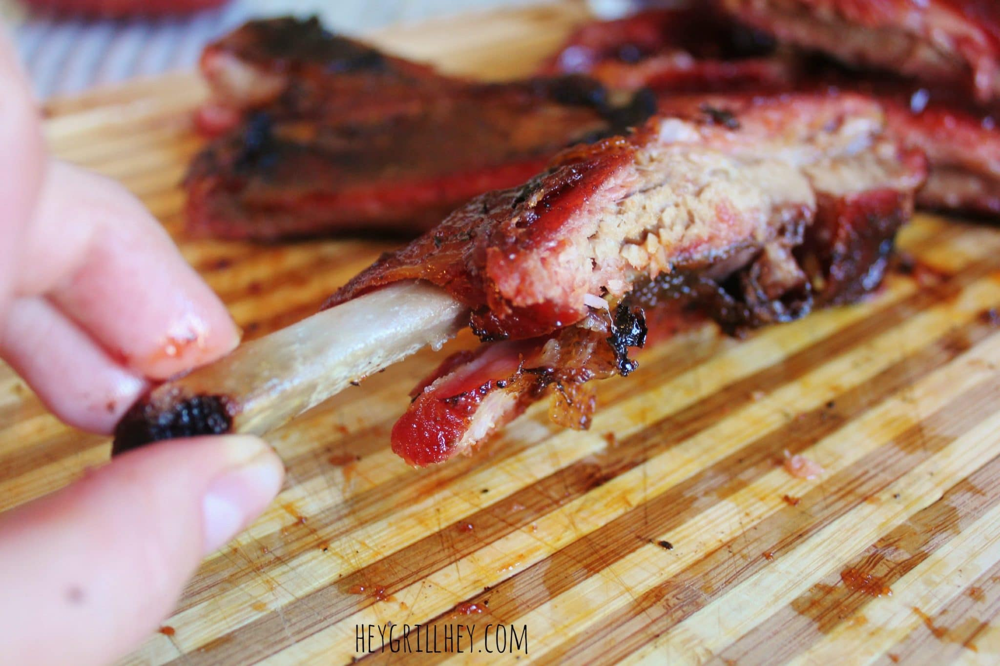

BBQ Ribs

Description
This BBQ Ribs recipe uses an electric smoker and the 3-2-1 method. With the 3-2-1 method, you
smoke the ribs directly on the rack for 3 hours. Then you wrap the ribs in tin foil and add a liquid of your choosing for another
two hours. Finally you add your desired sauce and smoke for an additional hour. Your ribs will fall of the bone and be perfectly
tender and flavorful.
Ingredients
- Rack of Baby Back Ribs
- 2 tbsp. Rub of Your Choosing
- 1 c. Desired Liquid
- 1/4 c. Brown Sugar
- 2-3 tbsp. Salted Butter
- Your Favorite BBQ Sauce
Directions
Optional: remove membrane
- Season both sides of meat with chosen rub
- Set smoker to 180-200 degrees, making sure it doesnt't go above 210 degrees
- Place ribs on grill and smoke for 3 hours
- After 3 hours, place ribs in tin foil and add choice of liquid then wrap. Set smoker to 225 degrees and smoke for additional
2 hours.
- After 2 hours, remove from foil, brush with BBQ sauce
- Return to grill for 1 hour
- Let rest for 10-15 minutes
- ENJOY!